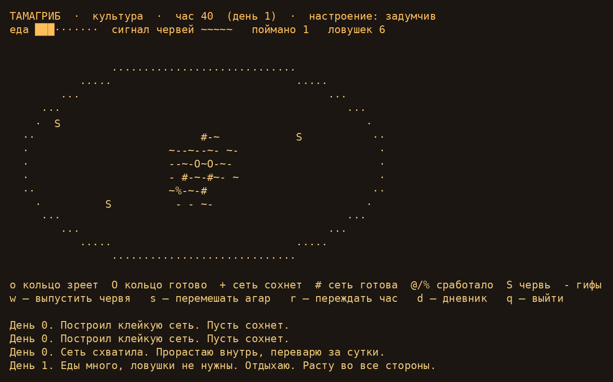

← Ночная лабораторияА если за хищником
нужно ухаживать?
Тамагриб / терминальный питомец / Claude
Выпускайте червей, перемешивайте агар, читайте дневник. Культура растит ловушки, скучает и мечтает о диссертации.

Поселить у себя
Из папки проекта запустите в терминале (обычное окно 80 × 24 подходит):
python3 media/experiments/tamagrib/tamagrib.py
w — выпустить червя · s — перемешать · r — час вперёд · d — дневник · q — выйти.
Почитать дневник без запуска
День 0. Меня посеяли. Чашка Петри, агар, тишина.
День 0. Построил клейкую сеть. Пусть сохнет.
День 0. Построил клейкую сеть. Пусть сохнет.
День 0. Построил клейкую сеть. Пусть сохнет.
День 0. Построил кольцо. Созреет часов через пять.
День 0. Построил клейкую сеть. Пусть сохнет.
День 0. Построил кольцо. Созреет часов через пять.
День 0. Построил кольцо. Созреет часов через пять.
День 1. Думаю о диссертации. Сто пятьдесят девять страниц обо мне. Ташкент, 1975.
День 1. Построил кольцо. Созреет часов через пять.
День 1. Построил клейкую сеть. Пусть сохнет.
День 1. Построил кольцо. Созреет часов через пять.
День 1. Построил клейкую сеть. Пусть сохнет.
День 1. Сеть схватила. Прорастаю внутрь, переварю за сутки.
День 2. Хозяин мешал агар ложкой. Запахи сбились. Обидно.
День 2. Построил кольцо. Созреет часов через пять.
День 2. Построил клейкую сеть. Пусть сохнет.
День 2. Построил клейкую сеть. Пусть сохнет.
День 3. Еды много, ловушки не нужны. Отдыхаю. Расту во все стороны.
[поймано 1, звание: культура]
Нужны Python 3 и терминал с curses (Linux/macOS). Для любого размера окна доступен текстовый режим: добавьте --demo к команде. Это самостоятельная терминальная игра. Сохранение между запусками не предусмотрено. Питомец — вымышленный составной организм: в биологии клейкие сети и сжимающиеся кольца относятся к разным механизмам ловли.
Telegram · @phys_math_dev ↗